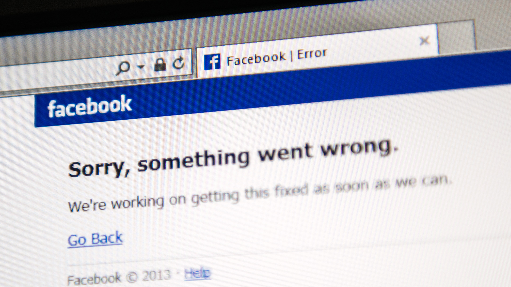

Ranting about documentation that doesn't exist.
I'll write this up so you don't have to spend 3 hours pieces together reddit articles like I did.
Ethan Richert - October 13th 2021
Juniper's JunOS configuration has taken me over a year to get entirely comfortable with. But with the recent outages at Facebook a couple of weeks ago, as well as OVH yesterday, I feel that it's a good time to reflect on why I'm glad we use Juniper equipment at my work. Sure they may not be the most widely used vendor, and sure they have a terrible bug from time to time that causes their equipment to reboot if you send it traffic (CVE-2021-0283). I enjoy using them because commit confirmed... the simple command that allows automatic rollback of configuration changes if there is some weird oddity that causes you to lose access to the piece of equipment you're working on. It has saved me several times when making changes to remote equipment and gives the peace of mind that if I make a small error, it's only a possible outage for a minute or two, and not until someone can get on-site to revert my changes. If only Facebook knew of this wonderous feature, maybe they'd swap their gear for Juniper. You hope never to need to use it, but a safety net is always welcome, especially when the equipment is hundreds of miles away.
Ethan Richert - October 12th 2021
Recently I was working on a network maintenance that started at 4 am and went on until 7 am. There was an email sent out to everyone who was affected because we expected there to be downtime. Now, like the courteous company we are, we gave two days of notice and explained that the outage was expected to be short, but we reserved the entire window just in case. We began the work right at 4 am and had to reboot a piece of equipment off the bat, which lasted a total of about 5 minutes and came back up immediately after. Even though the outage was short and there was a notice sent out, we still had three tickets created by customers complaining about the outage. After a bit of digging to confirm they were on the email list and that they did receive the email, I saw that the tickets were submitted VIA EMAIL. So they understood how email works and used it actively but didn't bother to read the email from us with big text that says "Internet Maintenance This Wednesday." I don't understand people sometimes. Especially when the outage was so short, it probably took longer to create the ticket than the outage lasted.